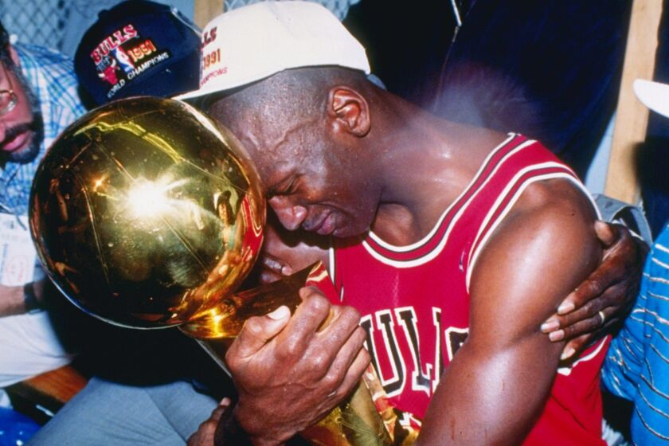
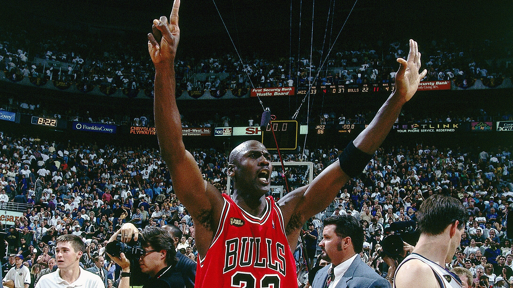

Michael Jordan


Michael Jordan, known as "His Airness," is often considered the greatest basketball player of all time. His killer instinct, unmatched scoring ability, and flawless Finals record define his legacy.
Career Achievements:
- NBA Championships: 6 (1991–1993, 1996–1998)
- NBA Most Valuable Player (MVP): 5 (1988, 1991, 1992, 1996, 1998)
- NBA Finals MVP: 6 (Every Finals he appeared in)
- NBA All-Star Appearances: 14
- NBA All-NBA First Team: 10 times
- NBA All-Defensive First Team: 9 times
- NBA Defensive Player of the Year: 1988
- NBA Rookie of the Year: 1985
All-Time Rankings:
- Points: 32,292 – 30.1 PPG (NBA all-time highest career average)
- Rebounds: 6,672 – 6.2 RPG
- Assists: 5,633 – 5.3 APG
- Steals: 2,514 – 2.3 SPG
- Field Goals Made: 12,192
- Field Goal Percentage: 49.7%
- Free Throw Percentage: 83.5%
- Minutes Played: 41,011
Single-Game Records:
- Most Points in a Game: 69
- Most Points in a Playoff Game: 63 (vs. Celtics, 1986)
- Most Steals in a Game: 10
Notable Career Feats:
- 6–0 in NBA Finals with 6 Finals MVPs
- Won two 3-peats with the Chicago Bulls
- Led NBA in scoring 10 times
- 1992 “Dream Team” Gold Medalist
- Icon of global basketball culture and branding
Hall of Fame Induction:
- 2009: Inducted into the Naismith Memorial Basketball Hall of Fame
Jordan famously wore #23 with the Bulls, briefly switching to #45 after his first retirement. His leadership, dominance, and clutch performances elevated him to mythic status in sports history.